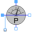

TransformerExample of transformer with short circuit impedance, transmission resistances and load |
|
Diagram
{kind=link}
Information
This information is part of the Modelica Standard Library maintained by the Modelica Association.
This examples shows the operational behavior of transformer with short circuit impedance. The transformer is loaded with constant current magnitude of 250A but variable phase angle. The angle varies from 0 to 360 degrees within one second of simulation time.
Transformer data
- Nominal primary voltage
V1N = 1000 V - Nominal secondary voltage
V2N = 200 V - Nominal apparent power
SN = 50 kVA - Short circuit impedance
Zk = 0.72 Ohm + j*0.96 Ohm - Magnetizing current and core loss are not taken into account
Plot the real part of the secondary voltage idealTransformer.v2.re on the x axis and idealTransformer.v2.im on the y axis. The locus of this complex voltage v2 is a circle. The center of the circle is the primary supply voltage divided by the transformation ratio of n=5. Since in this experiment the load current magnitude is constant, the voltage drop across the short circuit impedance of the transformer is constant, as well. The radius of the circle is equal to the constant magnitude of the voltage drop across the short circuit impedance.
Components (15)
| voltageSource |
Type: VoltageSource |
|
|---|---|---|
| idealTransformer |
Type: IdealTransformer |
|
|  | sensor0 |
Type: PowerSensor |
| zk |
Type: Impedance |
|
| load |
Type: VariableCurrentSource |
|
| sensorL |
Type: PowerSensor |
|
| ground1 |
Type: Ground |
|
| ground2 |
Type: Ground |
|
| v2 |
Type: VoltageSensor |
|
| polarToComplex |
Type: PolarToComplex |
|
| const |
Type: Constant |
|
| ramp |
Type: Ramp |
|
| constFrequency |
Type: Constant |
|
| i2 |
Type: CurrentSensor |
|
| i1 |
Type: CurrentSensor |